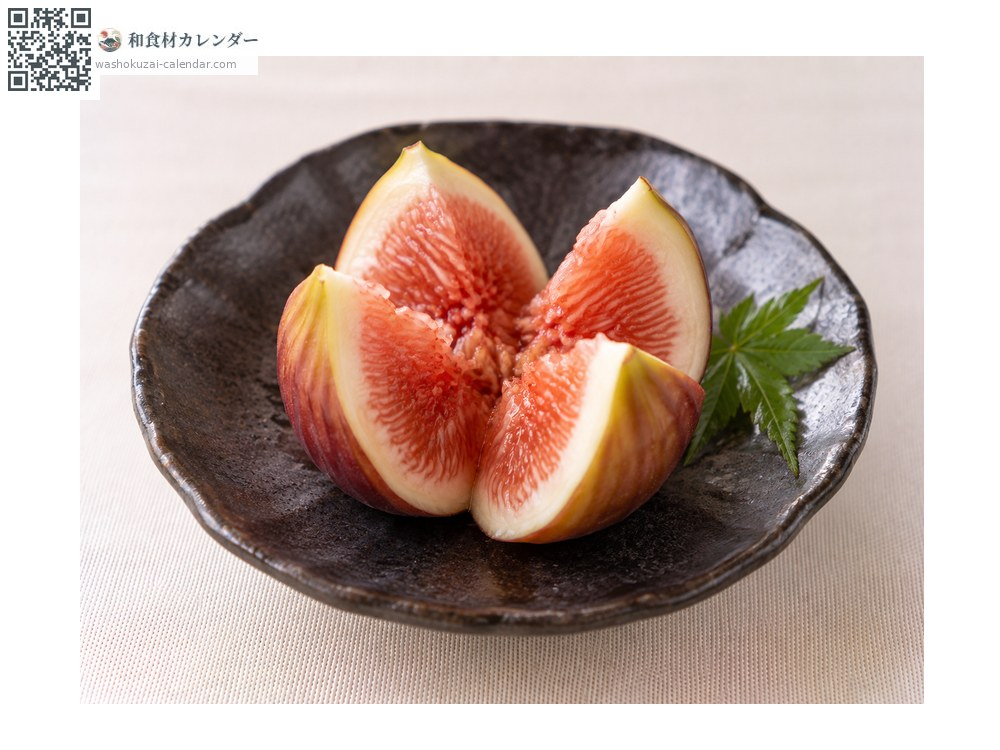
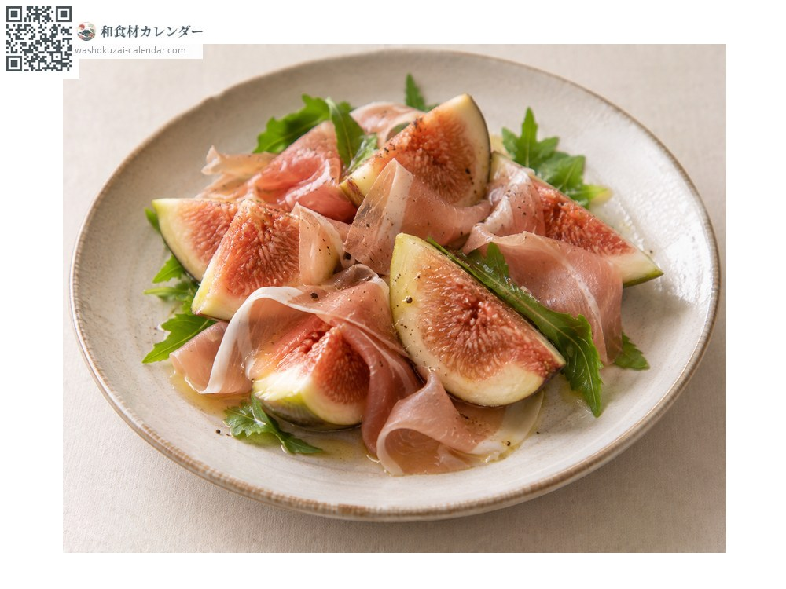
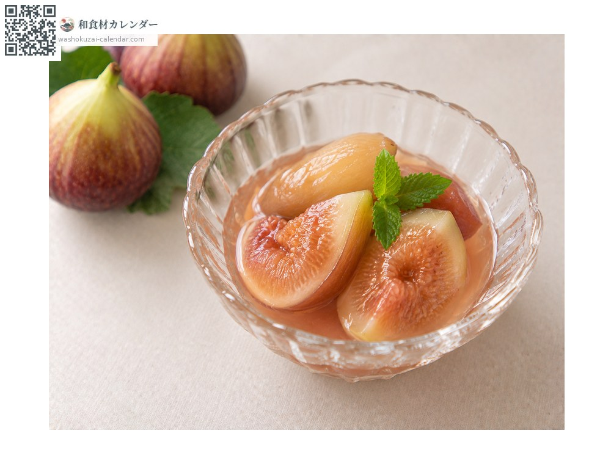
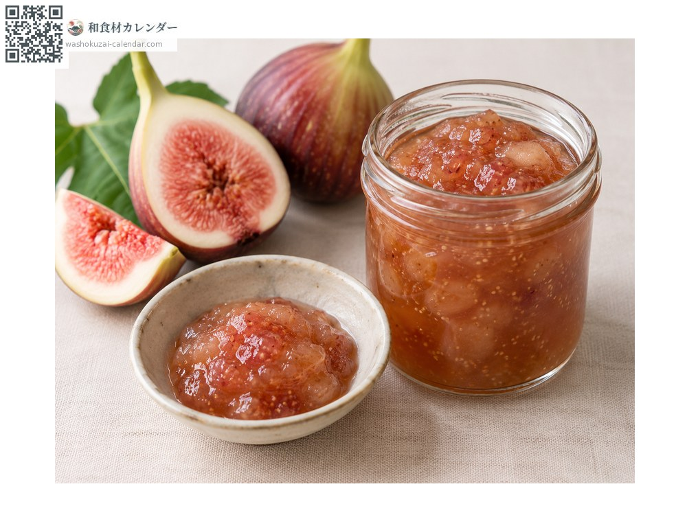

水果
无花果
イチジク いちじく ichijiku
别名ichijiku
应季时期为8月、9月、10月

应季时期
1月
2月
3月
4月
5月
6月
7月
8月
9月
10月
11月
12月
应季有供应
烹饪方法

直接生食
削皮直接吃。

搭配生火腿
搭配生火腿的咸味。

糖渍水果
以红酒炖煮。

果酱
熬煮成酱。
挑选方法
屁股那端开始微微裂开、整颗都上了色、果梗没有枯萎。
保存方法
坏得快，冷藏可放2至3天。不会追熟，买到时就是最佳状态。
主要产地
小知识
汉字写作「无花果」，因为看起来不开花就结果。其实花是开在果实内部的。